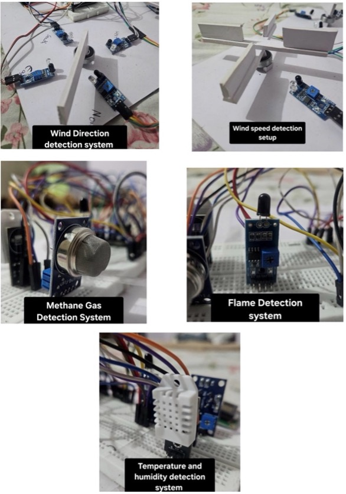
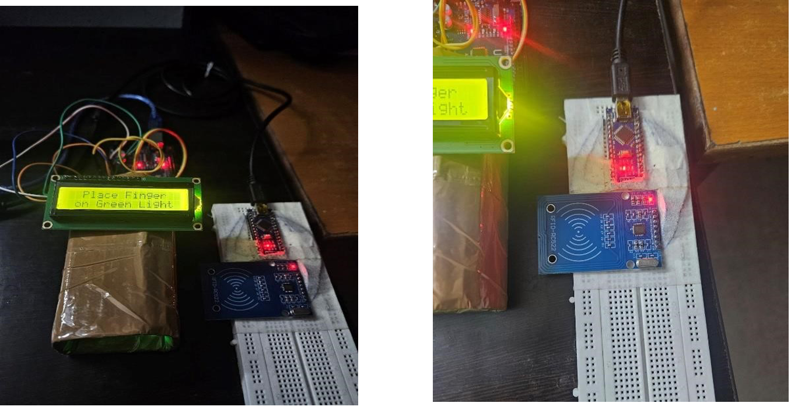

About: Developed a cost-effective wind detection and direction system, reducing production costs by 75% (₹1000 our price vs. ₹4000 market price), integrated with seamless location detection to pinpoint fire origins, and implemented real-time notifications via Blink It.
Tech Used: Arduino, ESP32, IR Sensor, Gas Sensor
About: Designed and implemented an RFID-based patient marking system for hospitals, featuring an intuitive interface for efficient patient database management and record-keeping.
Tech Used: Arduino, ESP32, RFID
